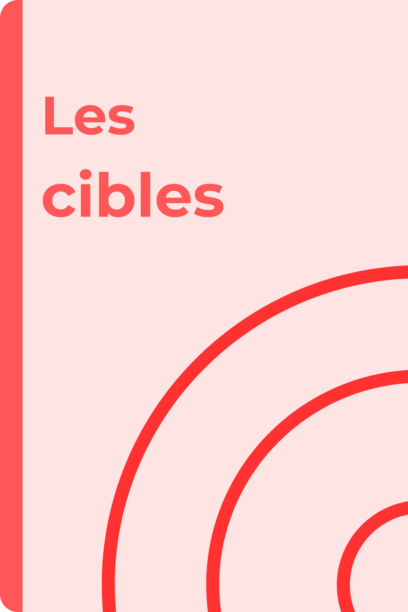

Calculer un score, retrouver des tirs manquants ou chercher comment atteindre un résultat : le jeu de la cible permet de travailler le calcul mental de différentes façons. Des cibles vierges sont proposées pour s’entraîner collectivement sur ardoise avant de passer aux trois niveaux d’exercices.